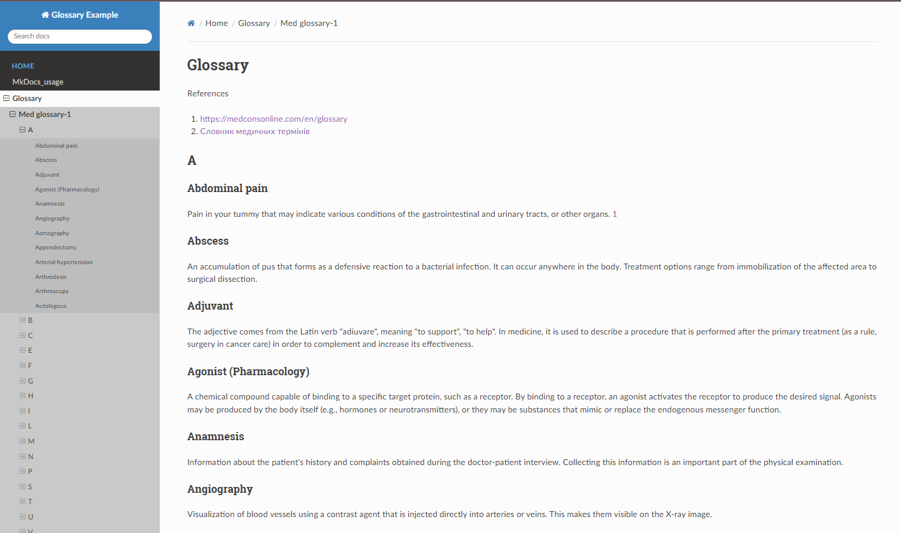
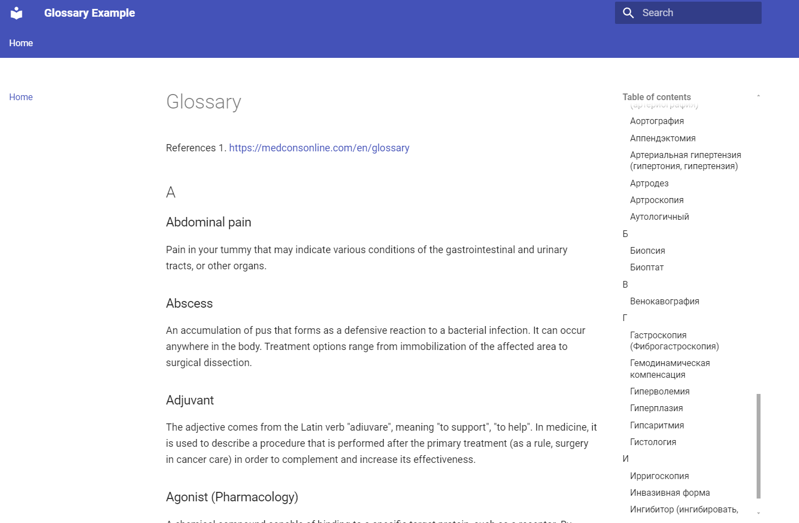

MkDocs
Static site generator (no database required), MkDocs can generate a simple web-based glossary from markdown files.
Key Features:
Documentation generator, markdown support.
How to use:
Write your glossary terms and definitions in markdown files. Generate static HTML files with MkDocs.
pip install mkdocs
Example:
# Glossary
## Term 1
Definition for Term 1.
## Term 2
Definition for Term 2.
Generate site:
mkdocs build
More info: MkDocs Documentation
Configurations
yml_config-1- [readthedocs]{.title-ref} theme
YML file [readthedocs]{.title-ref} theme
site_name: Glossary
nav:
- Home: index.md
- MkDocs_usage: MkDocs_usage.md
- Glossary:
- Medical glossary-1: medical-glossary-1.md
- Oncology glossary-1: oncology-glossary-1.md
theme: readthedocs
extra_css:
- css/customWidth.css
plugins:
- search:
prebuild_index: true
encoding: 'utf-8'
lang:
- en
- ru
This configuration creates design like on the picture above

yml_config-2 - [material]{.title-ref} theme
YML file [material]{.title-ref} theme
site_name: Glossary Example
nav:
- Home: med_glos_1_1.md
- About: MkDocs_usage.rst
- Intro: MkDocs_usage.rst
theme: material
features:
- navigation.tabs
- navigation.expand
- search.highlight
- search.share
- navigation.search
- user_color_mode_toggle # Enable the color mode toggle
palette:
- scheme: default
- scheme: slate
- scheme: ocean
- scheme: sepia
include_sidebar: true
custom_dir: docs/css
extra_css:
- css/customWidth.css
This configuration creates design like on the picture above

References
- med_glos_1.md: https://medconsonline.com/en/glossarij
- med_glos_1_1.md -same as med_glos_1.md but formated in markdown style
Deploy project on GitHub
Guide on how to deploy MkDocs (current project) on GitHub Pages
Please, follow these steps:
Step 1: Install MkDocs
If you haven\'t already installed MkDocs, you can do so using pip:
pip install mkdocs
You can verify the installation by running:
mkdocs --version
Step 2: Create a New MkDocs Project
Run the following command to create a new MkDocs project:
mkdocs new my_project
cd my_project
This will create a new directory with the basic structure of an MkDocs project.
Step 3: Customize Your Project
Edit the mkdocs.yml configuration file and the markdown files in the docs/ folder to add your content.
For example, you can edit mkdocs.yml to set your site name:
site_name: My Documentation
Add or modify markdown files inside the docs/ folder to create your documentation pages.
Step 4: Test Locally
You can run the project locally to preview your site:
:::: important ::: title Important :::
Execute command from the root dir of your project. ::::
mkdocs serve
Open your browser and go to http://127.0.0.1:8000 to view the site.
Step 5: Prepare for GitHub Deployment
You need to ensure that your project is linked to a GitHub repository. If you haven\'t created a repository yet, do the following:
Create a new repository on GitHub (without a README file). Inside your project folder, initialize git, add the remote repository, and push your project:
git init
git add .
git commit -m "Initial commit"
git remote add origin https://github.com/USERNAME/REPOSITORY_NAME.git
git branch -M main
git push -u origin main
Step 6: Deploy to GitHub Pages
MkDocs has built-in support for deploying to GitHub Pages. To do this, run:
mkdocs gh-deploy
This will:
Build your documentation into a static site. Push the static files to a gh-pages branch on GitHub, which GitHub Pages will use to serve your site.
Step 7: Verify the Deployment
Once you've run mkdocs gh-deploy, GitHub Pages should automatically start serving your site. You can view it at:
https://USERNAME.github.io/REPOSITORY_NAME/
Note: It may take a few minutes for GitHub Pages to update your site.
Step 8: Customize Your GitHub Pages Settings (Optional)
If you want to deploy the site from a different branch or folder, you can configure GitHub Pages in your repository settings:
Go to your repository on GitHub. Click on Settings > Pages. Choose the gh-pages branch or the directory you want to deploy. Now your MkDocs site should be live on GitHub Pages!
Common MkDocs Configuration for GitHub Pages You can enhance your mkdocs.yml configuration for a better experience. For example:
site_name: My Documentation
theme:
name: material
nav:
- Home: index.md
- About: about.md
markdown_extensions:
- toc:
permalink: true
This configuration applies a Material theme and adds navigation for your documentation.